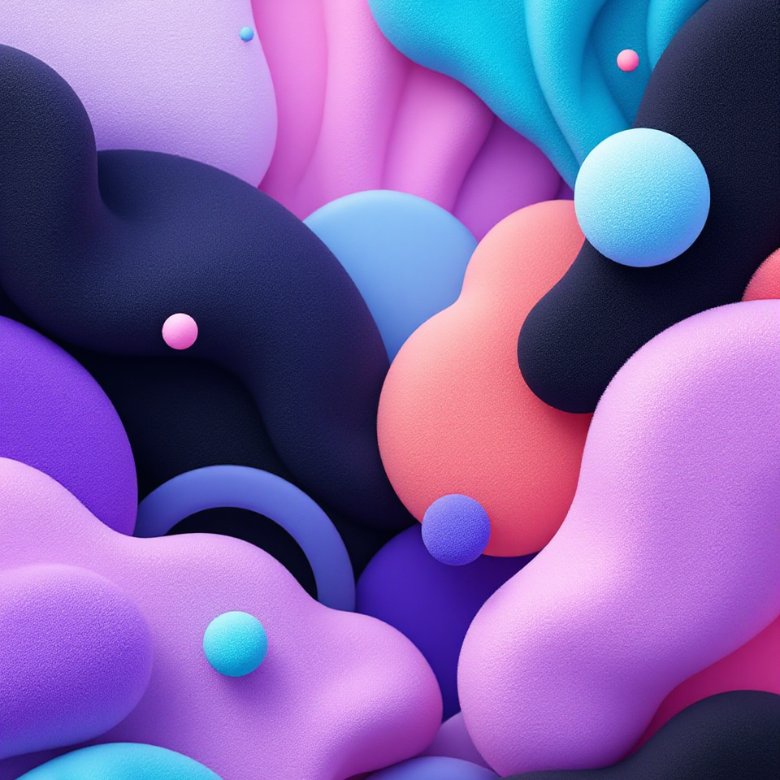
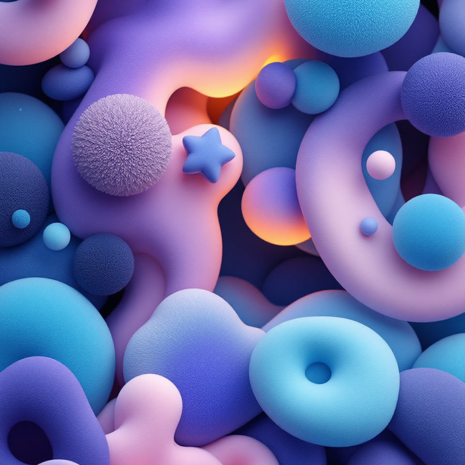
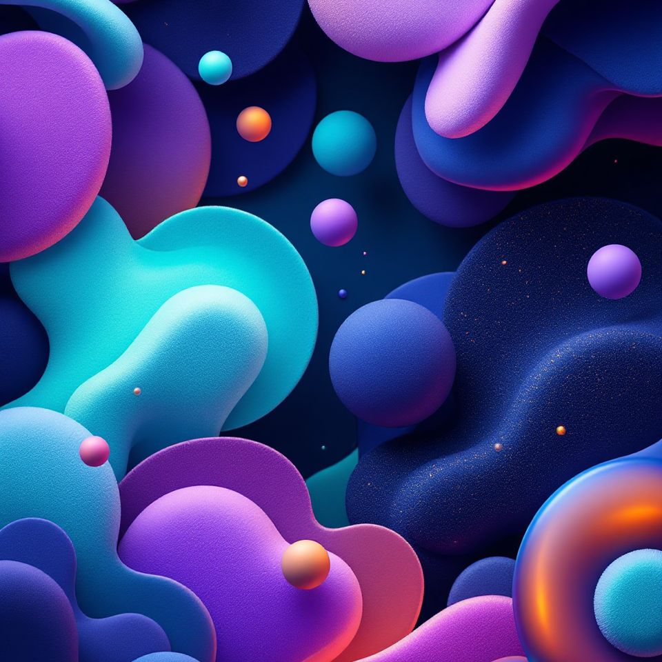

Generative Form Studies in Ambient AI

Exploring the intersection of AI and visual storytelling, this
project uses custom-trained generative models to create playful,
tactile environments. I designed a pipeline for manipulating
latent space to achieve fuzzy, organic forms—pushing the
boundaries of what “digital texture” can evoke.
View Project
Emotion-Driven Interaction Prototypes

This experiment blends neural style transfer with real-time mood
tagging to prototype an AI system that visually reacts to user
sentiment. I led design direction and model tuning, aiming to
build interfaces that feel as emotionally expressive as they are
functional.
View Project
Dimensional Interfaces for Creative Tools

A speculative design project imagining what next-gen creative
software might look like. Leveraging diffusion models and 3D depth
mapping, I mocked up a surreal interface where forms guide
function. It’s part UI, part art, and part machine hallucination.
View Project